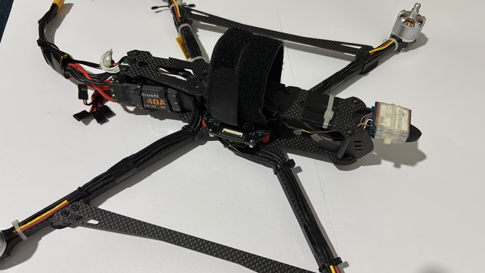
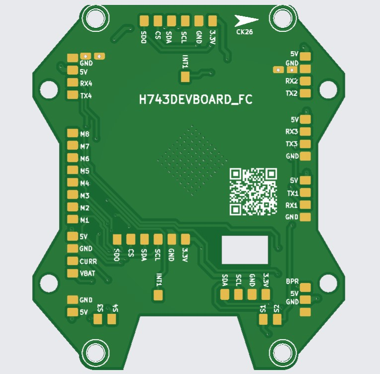
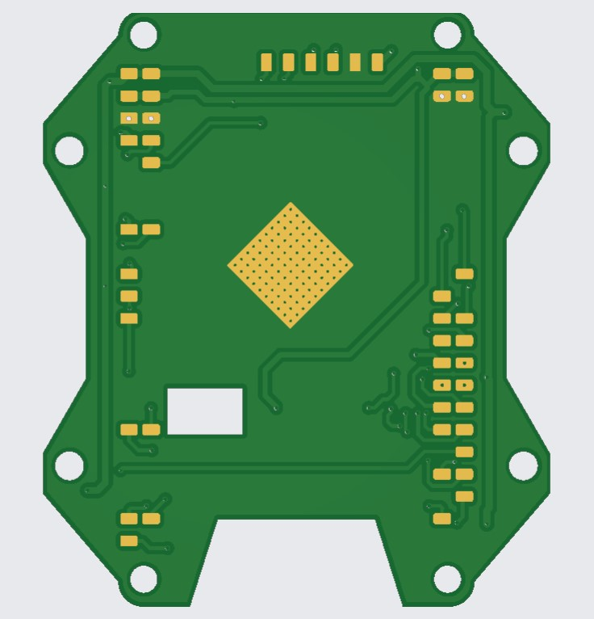

Betaflight Flight Controller — Bare-Metal Port
What it does
Custom Betaflight target files and a 4-layer carrier board that run standard Betaflight firmware on a generic industrial STM32H743VIT6 devboard. Where commercial flight controllers restrict you to pre-configured layouts, using a bare industrial devboard opens up full control of the silicon — at a fraction of the cost.
The repository is packaged as a definitive architectural guide: porting rules, timer remapping for advanced multi-rotor and actuator configurations, and fixes for three silicon-level bugs that block boot on this specific H743 variant. Each bug documented with the exact register, symptom, and fix.
The test platform
Validated on a full quadcopter frame with 8 motor + 4 servo actuator matrix, dual IMU for redundant attitude estimation, SDIO blackbox logging, and QSPI external flash. The carrier board breaks out every peripheral the H743 has to offer — dual SPI IMUs with dedicated EXTI interrupt lines, I2C barometer, and timer-remapped outputs for the pins that can't live on their Betaflight defaults.

The proof
It flies. Betaflight running on a generic industrial H743 devboard — no commercial flight controller silicon anywhere in the loop.
The hardware
Two views of the 4-layer carrier board: the top layer breaks out every pin of the DevEBox H743VIT6, the bottom layer carries the ground plane, decoupling routing, and the through-hole alignment pattern for the devboard.


The hard part
Betaflight's H7 codebase is optimized for 8 MHz or 24 MHz crystals on commercial FC hardware. The DevEBox board uses a 25 MHz HSE, and its silicon behaves differently in three separate ways that all block boot or peripheral initialization. Each failure looks unrelated; all three must be fixed for the target to be usable.
BUG 1 · 25 MHz HSE / PLL1 VCO OVERFLOW
Applying the default STM32H7 PLL multipliers to a 25 MHz HSE pushed the internal VCO to
3000 MHz — exceeding the 960 MHz hardware limit. The PLL engine fails, which
triggers an infinite safety reset loop inside HandleStuckSysTick(). The board never
reaches the main loop.
Fix: Rewrote pll1ConfigRevY / pll1ConfigRevV to scale
the 25 MHz crystal safely to a stable 480 MHz SYSCLK (M=5, N=192, P=2).
BUG 2 · DEAD HSI48 BLOCKS USB ENUMERATION
STM32 USB peripherals need a 48 MHz clock. Betaflight tries to enable the internal HSI48 oscillator
to generate it. On this specific H743 revision, RCC_CR_HSI48ON register writes are
silently ignored — the oscillator never starts, USB fails to enumerate, and the
virtual COM port is dead.
Fix: Bypassed the dead HSI48 entirely. Synthesized a 48 MHz USB clock from the
working 25 MHz HSE via the PLL3 engine (M=5, N=48, Q=5), gated behind a custom
USE_USB_CLOCK_PLL3 macro.
BUG 3 · DUAL BMI160 DMA COLLISION
With two BMI160 gyroscopes on SPI1 and SPI2, the secondary gyro regularly failed to lock its DMA channel. Two separate issues compounded:
-
The H7 DMAMUX auto-allocator was already claiming
DMA1 Stream 0forDSHOT_BITBANG_1, starvingSPI1_TXof a continuous stream — silent fallback to CPU-polling mode. -
The driver code (
pios_bmi160.c) used a globalBMI160InitDoneboolean. When Gyro 1 initialized, it set the flag; Gyro 2 skipped its configuration entirely on cold boot.
Fix: Hardcoded explicit DMA stream offsets in config.h (bypassing
DMAMUX auto-allocation) and refactored the driver to remove shared global state, so each BMI160
instance configures independently.
Firmware
The critical fix, distilled. Full source, build instructions, and flashing procedure are on GitHub.
// pll1ConfigRevV — scale 25 MHz HSE to 480 MHz SYSCLK
pllConfig_t pll1ConfigRevV = {
.clockMhz = 480,
.m = 5, // 25 MHz / 5 = 5 MHz reference
.n = 192, // 5 MHz × 192 = 960 MHz VCO (within limit)
.p = 2, // 960 MHz / 2 = 480 MHz SYSCLK
.q = 8,
.r = 5,
.vos = PWR_REGULATOR_VOLTAGE_SCALE0,
.vciRange = RCC_PLL1VCIRANGE_2,
};
// system_stm32h7xx.c — synthesize 48 MHz USB clock from HSE via PLL3 PLL3M = 5, // 25 MHz / 5 = 5 MHz PLL3N = 48, // 5 MHz × 48 = 240 MHz VCO PLL3Q = 5 // 240 MHz / 5 = 48 MHz USB clock
// config.h — override DMAMUX auto-allocation #define DEFAULT_GYRO_TO_USE GYRO_CONFIG_USE_GYRO_BOTH #define SPI1_TX_DMA_OPT 5 // → DMA1 Stream 4 #define SPI1_RX_DMA_OPT 2 // → DMA1 Stream 1 #define SPI2_TX_DMA_OPT 3 // → DMA1 Stream 2 #define SPI2_RX_DMA_OPT 4 // → DMA1 Stream 3